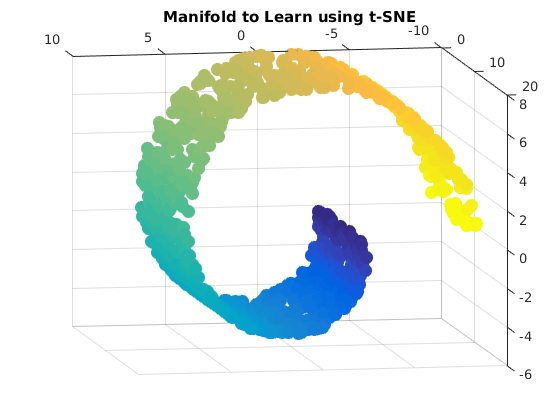
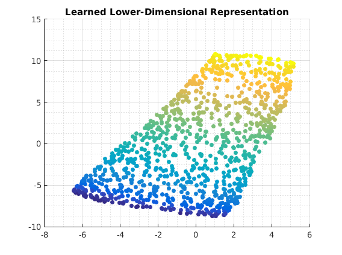

Contents
Description of demo_unsupervised_tSNE.m
Learn swiss roll manifold using symmetric t-distribution Stochastic Neighbour Embedding algorithm (van der Maaten & Hinton [2008])
close all; clear all; generateData_swissRoll;
usage of t-SNE visualization
grid on; grid minor; scatter3(X(:,1), X(:,2), X(:,3), 100, col,'filled'); title('Manifold to Learn using t-SNE'); view(-10,170); options = []; % NOTE: kappa and gamma tune adaptive weights learning: % - if direction of gradient component switches from one iter to next % the algorithm scales that gradient weighting by (1-gamma) % - if direction of gradient component stays constant from one iter % to next, algorithm adds kappa to that gradient weighting % - See R.A. Jacobs: "Increased rates of convergence...", 1988 options.tSNEOptions = struct('initial_momentum', 0.5, ... 'final_momentum', 0.8, ... 'momentum_switch_iter', 250, ... 'eta', 100, ... % intitial learning rate 'exaggerate_factor', 4, ... 'last_exaggeration_iter', 75, ... 'descent_iters', 1000, ... 'gamma', 0.2, ... 'kappa', 0.6, ... 'min_rate', 0.1, ... 'verbose', 0, ... % print out progress 'final_dims', 2); % dim of learned points Y = ml_visualize_tSNE(X,options); figure; scatter(Y(:,1),Y(:,2),30,col,'filled') title('Learned Lower-Dimensional Representation'); grid on; grid minor; 